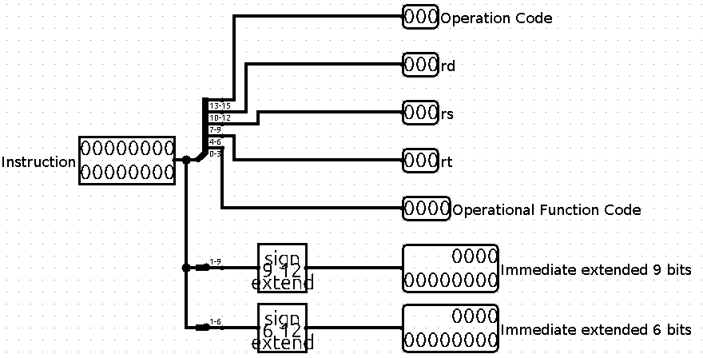
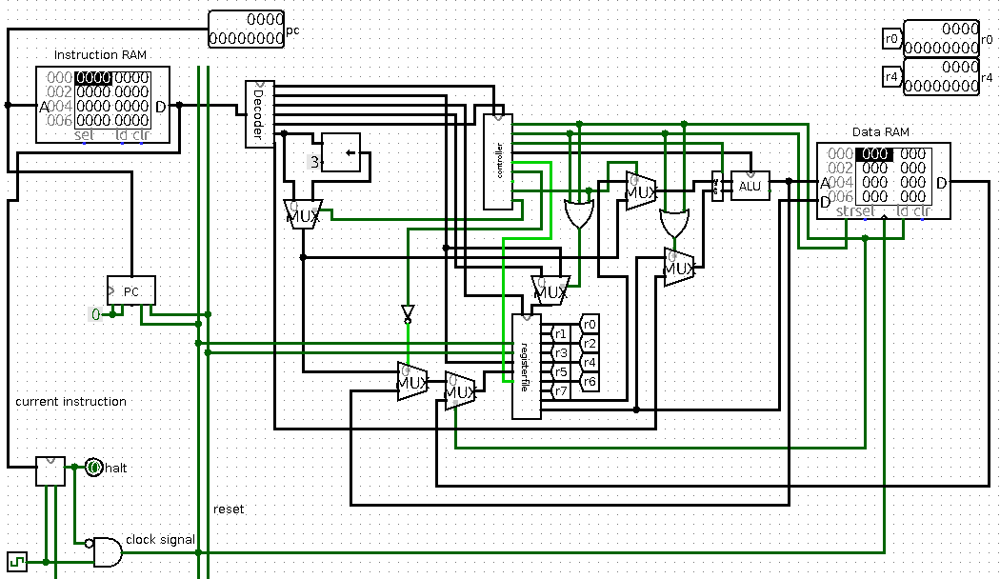
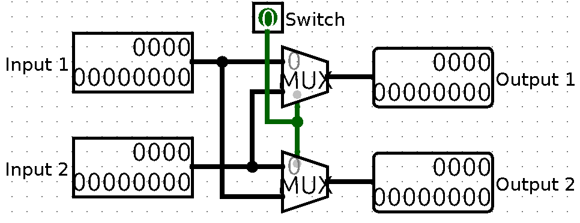

Verslag 5: Datapath
Dit verslag werd opgesteld door:
-
Naam: CouldBeMathijs
-
Naam: Creation
Aantal man-uren besteed: 20 uur
Moeilijkheidsgraad: 8/10 (1 is heel makkelijk, 10 is heel moeilijk)
Inhoud van de oplossing
De oplossing bestaat uit de volgende bestanden:
Verslag 5
Program Counter:

Onze program counter is gebasseerd op de counter van de vorige opdracht. We hebben deze lichtjes aangepast om de Branches toe te voegen, maar het concept blijft gelijk.
Decoder:

Onze decoder gebruikt splitters en bit extenders om de instructie op te splitsen, we hebben een 6-bit variant van de immidiate toegevoegd om zo makkelijker tussen de 2 vormen te kunnen differentiëren in onze main.
Controller:

- Read memory: staat enkel aan bij de lw-instructie
- Write memory: staat enkel aan bij de sw-instructie
- Subi: staat enkel aan bij de subi-instructie, deze was noodzakelijk om de swap te kunnen aansturen, lees SD.
- ALU Operation: als de OP-code 001 is wordt de functiecode letterlijk doorgegeven, bij 010 geven we de functiecode met de eerste bit geïnverteerd, bij OP-Code 000 maken we de ALU-code de code voor de zero-operation, er zijn ook extra checks voor addi en subi. Wanneer geen specifieke andere operatie nodig is, default het naar add.
- Register Write: staat aan bij alle operaties waarbij er naar een register geschreven moet worden, dat zijn ze allemaal behalve sw.
- Load Immediate Register: staat aan bij ldi en lui
- Zero Operation: staat aan bij de zero operation
- ALU Immediate: staat aan bij addi en subi
- Use Upper: staat aan bij lui
Simple Datapath:
De instructie wordt eerst gesplitst door de decoder waarna de functie- en OP-code naar de controller gaan.
- Zero: Het schrijft rechtstreeks 0x000 naar het gegeven register want reg-write staat aan, en r0 wordt uitgelezen, en overschrijft rd.
- ALU operations: Doordat de controller de juiste OP-code doorgeeft aan de ALU, reg-write aanstaat en rs en rt doorgegeven worden aan de ALU, kunnen alle ALU-operations uitgevoerd worden.
- ldi: De 9-bit immediate wordt doorgegeven aan de registerfile, en het register rd wordt met die waarde overschreven.
- lui: De gebitshifte waarde wordt doorgelaten door een MUX, hierna is het analoog aan de ldi.
- addi: Laat de immediate door naar de a-input van de ALU, laat de data in rd door naar de b input van de ALU en schrijft de output naar rd
- subi: Omdat subtract niet commutatief is, moeten we compenseren met een swap anders zou de immediate - rd gedaan worden in plaats van omgekeerd. We hadden dit ook kunnen oplossen door de kabels naar de registerfile te herplaatsen, maar dit was de laatste bug in ons datapad en we wouden niet knoeien met dat dat al werkte.
- lw: Stelt de ALU in op optellen, telt rs bij de 6-bit immediate zegt tegen het datageheugen dat we willen lezen en laat de output door naar rd.
- sw: Stelt de ALU in op optellen, telt rs bij de 6-bit immediate zegt tegen het datagehuegen dat we er naar willen schrijven en geeft de output van register rd door aan het geheugen.

Swap:
